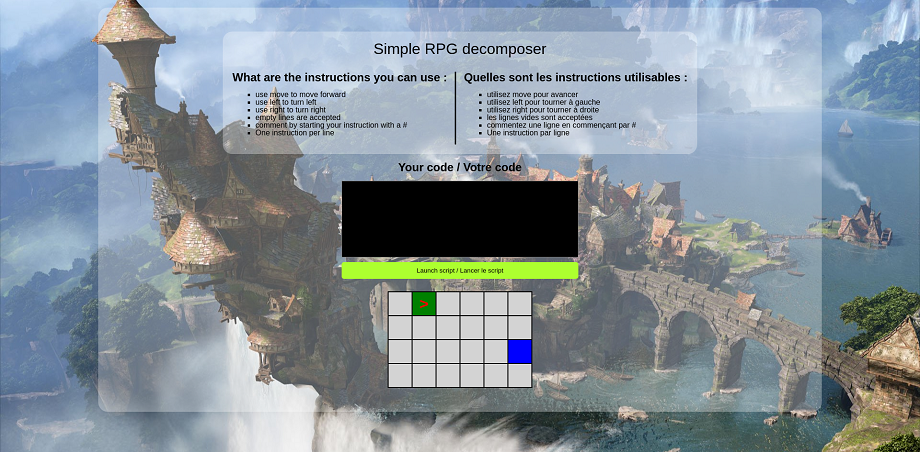
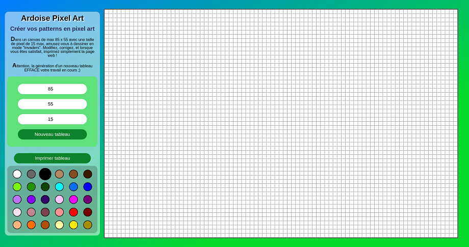

Introduction
Magie de l'internet
Raison pour laquelle je me lève tous les matins : créer avec vous le site internet ou l'application web qui correspondra le plus à ce que vous recherchez.
Bien qu'ayant rejoint depuis peu le monde du développement, je suis à la recherche de défis qui me permettront de mettre en pratique les notions qui me tiennent à coeur :
- La créativité : parce que je trouve qu'il n'y a rien de plus triste qu'un site qui ressemble à un autre site. Place à la personnalisation !
- L'ergonomie : Qui n'a jamais quitté un site, excédé de tourner en rond pour trouver une information précise ? Pas de ça avec moi !
- L'accessibilité : même si la cible est un public particulier, on ne peut contrôler qui vient sur le site, et il doit donc être adapté pour le plus d'utilisateurs possible.
J'ai donc une profonde attirance pour l'intégration et les belles interfaces pratiques et ludiques, mais je suis ouverte à des projets plus larges et plus complets.
Formation
Cursus par boule de crystal
Enfin presque, mais pas tout à fait.
J'ai suivi 2 cursus au sein d'O'clock
En 2018-2019, je valide le cursus developpeur web où j'ai vu :
- Côté Technique :
- HTML, CSS, BootStrap, JavaScript, Sass pour la partie "Front" (la partie visuelle)
- PHP, la création/gestion de Base de données via MySQL pour la partie Back (la partie serveur)
- L'utilisation, installation et personnalisation d'un CMS wonnu : WordPress, avec thème et plugins sur demande
- Côté gestion de projet :
- L'utilisation de Git/Github pour le versionning et le travail en équipe
- La préparation d'un projet avant de coder : cahier des charges, répartition des rôles, doc technique, wireframes,...
Tout cela est mis en pratique lors du projet de fin de formation, à savoir l'apothéose. Vous pouvez accéder à cette présention en cliquant sur l'icône youtube
Je passe aussi une certification Opquast, la référence française pour les bonnes pratiques du web, où j'obtiens un score de 86/1000, ce qui me donne un niveau avancé, que vous pouvez aller vérifier sur le site officiel.
Suite à cette formation, je décroche un stage chez AKKA Technologies, où je travaille sur la refonte d'un logiciel interne de gestion de projets. Je mets les mains principalement dans Angular et Material UI et j'effleure du bout de ma baguette Java et Oracle.
A la fin de ce stage, je retourne derrière ma boule de crystal pour suivre le nouveau cursus d'Oclock, la formation fullstack JS. C'est reparti pour 5 mois de formation, avec, au programme :
- Côté technique :
- Je revois HTML et CSS et j'approfondis grandement ma compétence JavaScript pour le "Front" ;
- Je découvre NodeJs, Express, Sequelize, PostGreSQL et les API en JavaScript pour le "Back" ;
- J'explore les arcanes de React avec Semantic UI, Redux, Acios et les UseState pour la spécialité.
- Côté gestion de projets :
- Je reste fidèle à Git/Github, je fouille davantage dans les grimoires de NPM pour les packages ;
- Petite initiation à Notion, un excellent système de suivi de projet, un kanban bien puissant.
Je refais une apothéose avec un super équipe sur un projet réel, pour une "vraie" cliente (le site est toujours en cours de réalisation) dont vous pouvez voir le résultat au bout de 20 jours de travail en cliquant sur l'icône youtube
À propos
Sorcière du web
Secrétaire, militaire et maintenant développeuse web, je m'épanouis dans cet univers alliant créativité et technicité. Faire quelque chose de beau à partir d'un langage informatique, quelque part, on dirait de la magie, non ?
Organisée, réactive, rigoureuse, curieuse et créative, j'ai touché à divers domaines artistiques (dessin, écriture, sculpture, couture et bien d'autres) avant d'y allier la technique pour m'orienter vers le développement web.
Fan d'Harry Potter depuis plus de 20 ans (Potterhead pour les geeks), je me définis comme une sorcière du web car à partir de rien, avec des formules magiques qui peuvent sembler incompréhensibles pour les non-initiés, je fabrique et je crée des sites internets ludiques et vivants. On pourrait même dire que je suis alchimiste !
Si vous cherchez une développeuse joviale, à l'esprit ouvert, qui aime se challenger et qui fera le nécessaire pour réaliser votre projet, n'hésitez pas à me contacter. Sachez cependant que si je manque de compétences sur certains domaines, je n'hésiterai pas à vous le dire et vous rediriger vers des professionnels qui sauront répondre à vos besoins.
D'ailleurs, si vous êtes curieux, que vous aimez l'auto-dérision et les BD, vous pouvez suivre mes péripéties en cliquant sur l'icône instagram Instagram
Projets
Artefacts enchantés
Secrétaire, militaire et maintenant développeuse web, ma récente reconversion dans le milieu du numérique est compensée par une connaissance du monde du travail solide et atypique.
RPG Decomposer

Petit projet de plateau RPG avec un déplacement via un script. La case de départ et la case d'arrivée sont générées aléatoirement, à vous de bien décomposer les déplacements pour aller du début à la fin !
Attention, les liens ci-dessous s'ouvrent dans une nouvelle fenêtre !
GitHub Visuel
Pixel Art Board

Petit tableau de pixel art en HTML, CSS et JavaScript. Une fois rempli, vous pouvez l'imprimer en PDF où sur votre imprimante.
Attention, les liens ci-dessous s'ouvrent dans une nouvelle fenêtre !
GitHub Visuel
Contact
Un petit hibou ?